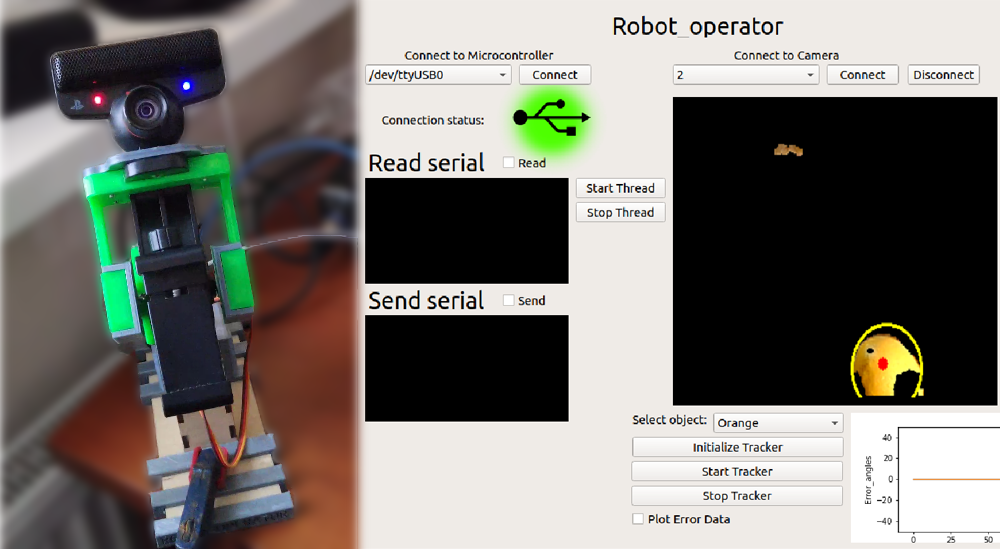
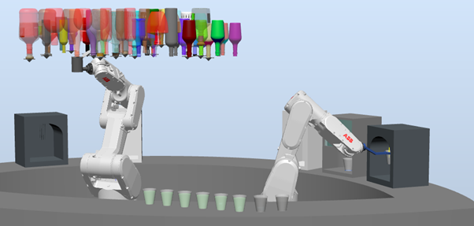

Human face and color tracking robot. Built using cheap components and 3D printed parts.
Camera and algorithm optimised to have rapid response rate to object movement.
Project has a built GUI for setting different tracking parameters, debugging and seeing
visual result. A phone can be mounted to have high quality video.


Robot that follows a wall and tries to keep distance between
itself and the wall and avoid obstacles aswell.
Built using cheap components, raspberry pi and
algorithm implemented with robot operating system (ROS).

Built using three NE 555 timers and CD4017 step sequencer. Rate of loop could be changed with a knob and for each step a different note can be set.
With the second knob pitch of the sequencer can be changed.

An oldschool game built in C console. UI and game window is drawn with "Windows.h" library.
Snake, UI skin and colors can be changed. Different speed can be chosen, aswell as other game parameters.

Implementation of Kalman filter using 6DOF IMU, real time processing and 3D visualisation.

Robot bartender project using ABB Robot Studio. Different drinks can be served and preprogrammed.
With a click of a button, order is given to the system.
First robot is being used to mix and pour cocktails. Second one serves the drink
to a customer.
Fishing bot for money making in MMO game. Implementation is done using computer vision algorithms.